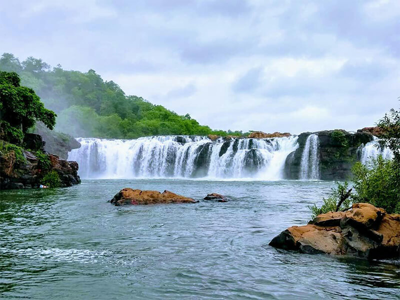

Kasu Brahmananda Reddy National Park, nestled within the urban expanse of Jubilee Hills and Banjara Hills in Hyderabad, Telangana, spans approximately 390 acres. Originally a palace complex gifted to Prince Mukarram Jah in 1967
Mahavir Harina Vanasthali National Park
The Mahavir Harina Vanasthali National Park located in Hyderabad is one such great attraction. The wildlife park, named after the holy saint of the Jains, Lord Mahavir, is located in Vanasthalipuram, which is a residential suburb about 15 kms from the main city...
Mrugavani National Park
Nestled in Hyderabad, Telangana State, Mrugavani National Park is a sprawling expanse located at Chilkur in Moinabad mandal, a mere 20 km from MGBS. Covering 1,211 acres or 3.6 square kilometers,

Botanical Park
Botanical Garden of Hyderabad is also one of the interesting sightseeing places in Hyderabad offering a refreshing setting and rich flora. Having been developed by the Forest Departments, Botanical Garden is situated in Madhapur near the Hi-tech City